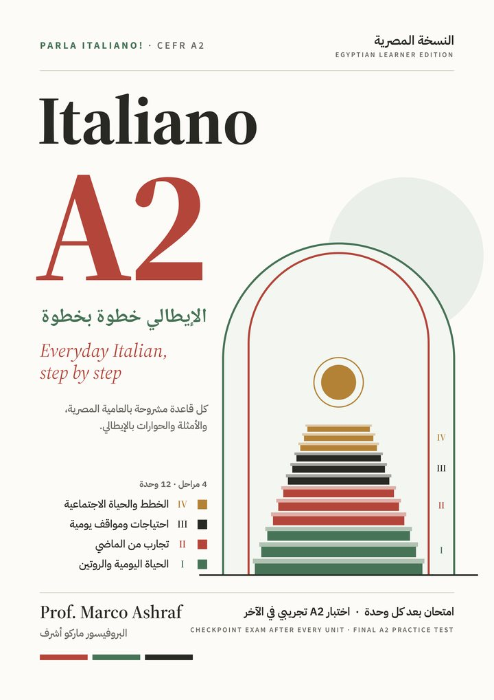

Everyday Italian, step by step
Every Italian word, grammar example, dialogue and reading from the twelve units, read aloud. Open the book at the unit, press play, and repeat in the pauses.
Voice: Prof. Marco Ashraf, recreated with AI from his own recording and with his permission. Checked against the book's text.
Studying with Prof. Marco?Questions about the book or the weekly online sessions: send us a message.
Message us on Messenger